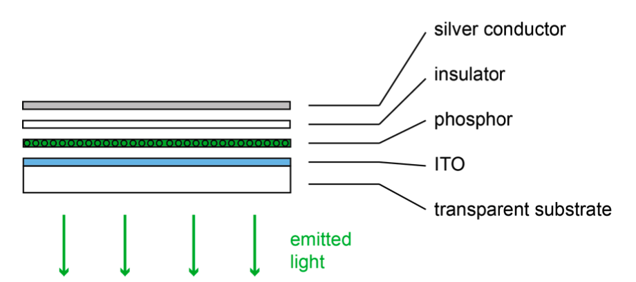
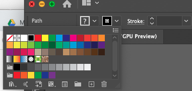

6.810 Engineering Interactive Technologies (fall 2020)
Fabrication and Control of Electroluminescent Displays
Your Task for Today
In the next two labs, we will build an interactive mug. It can sense its own temperature and display how hot it is with an electroluminescent display that we will print in this lab. The final product should look like this:
(insert picture of the mug here)
For today, we will focus on printing the electroluminescent display and building the controller circuit to turn it on and off.
Recall from lecture (insert which lecture) that electroluminescent displays consist of 4 layers: two conductive layers that sandwich the light emitting phosphor layer. To avoid shorts, we also have a insulating dielectric layer that prevents the two conductive layers from touch.
We will use these materials to build a display today:
(1) transparent sheets coated with ITO.
(2) screen printed blue phosphor
(3) screen printed dielectric
(4) screen printed silver nano-particle ink as the bottom electrode
We sent you two precoated sheets that already contain the ITO, phosphor, and insulator layer. Your task is to add the last missing layer: the silver conductor. The displays will only emit light in these areas where you print silver and will stay dark everywhere else.

As you have seen in the photo, we want to print a display shaped as a steaming coffee mug. So, in order to give the display this shape, we will fabricate a stencil that will give the display its shape. Next, we will apply the stencil onto the sample that we sent you in your fabrication bags. And finally, we will screen print onto the stencils with conductive silver nano-particle ink. So, let's get started with fabricating the stencil.
Preparing the display sample
You will notice that the printed layers (white) do not cover the entire sample. There is a bar that is still transparent. This area allows us to get access to the ITO layer. We will connect our power supply to the ITO. The best way to do that here is to use copper tape.
Take the copper take from your fabrication bag and glue the tape over the entire bar such that it is completely covered and make it even a bit longer (about 1" (2.5cmn)). The copper tape connects to the ITO and we need this little flap to connect it to a power supply later in the tutorial.
Fabricating a stencil
This part of the tutorial involves laser cutting the stencil out of a transparent adhesive sheet.
Step 1: Download the svg file of the coffee mug design here. (ask Ticha to make one)
Next, open the file in your favorite vector design program (e.g. Adobe Illustrator, InkScape,...). We will show the rest of this lab with Illustrator but the basic operations are the same in each program. The mug should look like this:

Open the svg file and check if the mug design has the right size. It should be around 2"x2", 5x5cm or 500x500 pixel.

Fun facts about laser cutting: A laser cutter operates in two different modes (1) raster, and (2) vector. In "Raster" mode, the laser moves from the top of the esign down to the bottom line by line, i.e. it does not follow the outlines of a shape. If we want the laser to follow the design's outline, we have to choose the "vector" mode. If you use a Universal laser cutter you have to do two things:
First, you have to change the color of the outlines to red. Select all lines of the coffee mug and change their color to Red.

Next, you have to set the line thickness. Set it to 0.001 (or hairline in other graphic editors).
These two parameters tell the driver of the laser cutter to treat it as a vector and not as a rasterized image. Good!
Now, click on print and select the laser cutter as the printer.
(Add the other steps to laser cut a stencil here)
Applying the stencil on the El display sample
Take the stencil out of the laser cutter. Next, we want to apply it onto our EL display sample. To this end, first peel the protective layer from the back side of the foil. The foil should be adhesive on one side. Now, try to stick the stencil as good as you can on top of the display sample. Make sure that the cut out coffee mug covers the white areas completely and don't cover the area where you put the copper tape before.
Spray/Screen print the silver ink on your stencil
Great you printed the silver onto the sample. It is still wet though and not conductive.
This ink needs thermal treatment to make the silver particles fuse together and become conductive. Take the heat gun in the workshop and set it to exactly 120C (250F). Heat the sample for about 3 minutes.
Next, we have to test if the silver is nice and conductive. As in lab 1, get a multimeter and check if the layer is conductive. You should read something around 1Ohm resistance.
Congratulations. You fabricated your first flexible electroluminescent display. Let's connect it to a power supply and light it up!
Connecting it to the Power Supply
EL displays require an alternating current between the two elecrodes to excite the phosphor and make it light up. Therfore, just connecting it to a 12V DC power supply won;t do the trick.
We use an inverter to generate 110V AC from a 12V DC power supply.
Warning! The 110V are low current and not really dangerous, but they can give you an unpleasant shock. Therfore, never plug it in when the electrodes are exposed our you hold the display in your hands! Trust me!
The inverter is in your fabrication bag. Take it out along with the 12V power supply that we also put in the bag. Your first step is to connect the inverter to the power supply (but leave the power supply unplugged).
(picture here)
Now, take your EL display and put some copper tape on the silver (and only the silver) layer that you just printed. Again, leave a little flap that makes it easier to connect a crocodile connector to it.
Next, take two crocodile wires and connect the two electrodes of your display to the two wires of the inverter. The order doesn't matter.
Turn the display around such that you see the top side. The silver should be on the bottom now and you can't see anymore.
When this is done, there is only one thing left. Plug in the power supply to your power outlet. You should see a bright EL display in the shape of the coffee mug now. If you see that, congratulations. If not, check if all wires are connected properly or ask for some help from the TAs.
Building the control circuit for EL Displays
The goal of this final part of the lab is to build a control circuit that lets you turn on and off the display and even set it's brightness (e.g. dimming it down). The ESP32 does not have a suitable AC switch built-in. Thus, we have to build or own. We will use a Triac to switch it and an optocoupler to control the triac from the ESP32. Below you see the schematic of the circuit. Get yourself a breadboard, wires and the components and start building it.
Write the controller program
Great! We can now control EL displays with the pins of the microcontroller. Next, we have to write a script that lets the display blink. This is very simple with the circuit you already built. Check again, to which pin you connected the optocoupler and us digitalWrite(pin,HIGH) to turn it on, and digitalWrite(pin,LOW) to turn it off.
You can also dim it by using the PWM signal of the ESP pins. Replace the digitalWrite command with these two commands:
// the number of the LED pin
const int ledPin = 16; // 16 corresponds to GPIO16
// setting PWM properties
const int freq = 5000;
const int ledChannel = 0;
const int resolution = 8;
void setup(){
// configure LED PWM functionalitites
ledcSetup(ledChannel, freq, resolution);
// attach the channel to the GPIO to be controlled
ledcAttachPin(ledPin, ledChannel);
}
void loop(){
// increase the LED brightness
for(int dutyCycle = 0; dutyCycle <= 255; dutyCycle++){
// changing the LED brightness with PWM
ledcWrite(ledChannel, dutyCycle);
delay(15);
}
// decrease the LED brightness
for(int dutyCycle = 255; dutyCycle >= 0; dutyCycle--){
// changing the LED brightness with PWM
ledcWrite(ledChannel, dutyCycle);
delay(15);
}
}
Checkoff 3: Show your EL display and let it blink
Airbrushing Hardware
To airbrush, you need a compressor that creates air pressure and you need a spraygun, which is connected to the compressor.


Safety Equipment
Make sure you are wearing gloves, a lab coat, and a mask before you start spraying or cleaning.
Extensive Cleaning the Airbrush
Before you can airbrush anything, you need to clean the airbrush.
If the airbrush has not been used for 3 or more days, you need to perform the extensive cleaning as outlined below.
If the airbrush was in use more recently, you can do the light cleaning procedure explained in the next section.
First you need to screw off the back of the airbrush as shown below.

Also open up the metal screw at the back (check where the fingers are pointing.
You don't have to remove it, but you need to open it so the needle (metal stick sticking out can move back and forth).
Next, screw off the front part of the airbrush like shown below.


Also screw off the golden part from the front (compare the left and right image, see both components on the table in the back on the right image).

Next, remove the needle from the airbrush casing.
Depending on how dried out the inks were, the harder it may be to remove the needle.
Hammer it on a covered surface to remove, but please only apply force on the backside not the front.


Next, put some laquer thinner on a paper tissue.
Rub the needle with the paper tissue. Only rub from one side, applying motion from the back (non-sharp) towards the front (sharp side). Never rub back and forth or you will hurt yourself with the needle tip.


Put the needle aside and clean the back (Michael??) parts as well.
For this, you first have to further disassemble them.


Once you have the three parts on the table as shown above, you can clean them.
For this, put a bit of laquer thinner into a cup.
Then use the needle of the airbrush, dip it into the laquer thinner, and then insert the needle into the different components and rub it a bit around to remove any debris inside the part.
If you have Qtips you can also use a Qtip.


Now that you have everything cleaned, you need to put everything back together!
First insert the needle into the airbrush.
Then assemble and attach the front pieces.
Then assemble and attach the back piece and add the back enclosure.
Light Cleaning the Airbrush
You need to perform this procedure if the airbrush was not used in the last 15 minutes but within the last 3 days (yes ink dries inside quickly).
You also need to perform this procedure if you want to switch to a different ink.
Before starting, turn on the compressor.
First, fill some laquer thinner into the airbrush tank until about 2/3 full.

Next, press your finger onto the front of the airbrush where the air / ink normally exits.
It's a good idea to use your non-dominant hand for this (i.e. if you hold the airbrush with your right hand, use the thumb of your left hand to close the front of the airbrush).

While pressing really hard with your thumb to keep the front of the airbrush closed, push down on the airbrush knob to open the air connection to the compressor. You should feel air pressing towards your thumb. Keep it closed.
Now while carefully slowly pulling back on the airbrush knob, you will see that the laquer thinner in the tank will start to bubble. Slowly pull the airbrush know further back until you see a decent amount of bubbling. Hold everything in this position for about 1-2 minutes to give the tank a good cleaning.

Once you are done, turn off the compressor.
Regular Spraying
Allright, so now that you know everything about cleaning, you also have to get the material ready.
Inks come in these cans.
Before you can use them, you need to shake the ink for at least 2-3 minutes.
Otherwise the copper particles seperate and you will either clog the airbrush up or the sprayed liquid is not conductive at all.


To double check that nothing is at the bottom of the can anymore, you can also use a wooden stick, put it inside the can and see how the consistency is when you pull it out. If you still see any particles or clumpy parts you definitely need to shake some more.


While we know you are the shake-master, we can still not 100% be sure that all the particles are dissolved.
Therefore, we use a filter (XX micron) to pour the ink through to make sure that really nothing enters the airbrush that shouldn't enter it.
Before you use the filter, cut off the top area that you don't need and that makes the filter unnecessary bulky.
We only need the part at the bottom that has the 'fabric' filter net.
Fill the tank until about 2/3rds or less with ink.


 Now you are ready to spray.
Now you are ready to spray.
Turn on the compressor.
Push the button down to open the valve between the compressor and the airbrush.
If you push the button down, you should feel air coming out from the front of the airbrush but no ink yet.
Once you have confirmed that air is flowing, push the button down and slowly pull it back towards you. This will start the ink flow.
The further you pull it towards you, the more ink will come out.
For spraying conductive ink, we always want to pull it back to the maximum.

When you spray, you want to have even coverage.
Aim for ca. 50% overlap between traces.
For conductive surfaces, you need to spray the entire surface first horizontally (left to right) and then afterwards also do a vertical pass (top to bottom).
You need to repeat this at least 5 times to make sure the entire area is covered and there are no non-conductive patches.
Also while you spray, make sure you have quite some distance between the airbrush and the object. If you are too close drops will from on the surface leading to uneven coverage.
Use a multimeter to check of you reached sufficient conductivity.

Once you are done spraying, you need to let your object dry for at least 4 hours.
After ca. 30 minutes, the ink will not smear anymore but it is not yet completely dry.
Before you leave, make sure you turn off the compressor and most importantly, clean the airbrush!